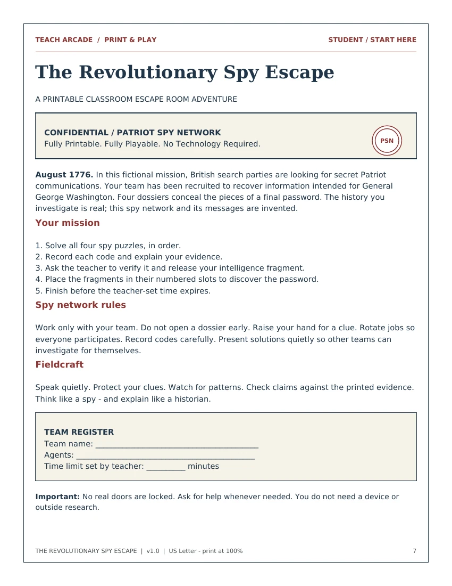

PAPER CLUES. REAL THINKING.
Printable Escape Rooms
Complete classroom missions with every puzzle, clue, hint and answer in print. No devices or physical locks required.
MISSION 001 / U.S. HISTORY
The Revolutionary Spy Escape
Decode a dispatch, arrange a timeline, sort political viewpoints and trace a courier route in a fictional 1776 Patriot mission.
Grades 5-9 · 40-50 minutes · Teams of 3-4
View mission & download packetFree · 18 pages · Teacher guide included
Looking for an on-screen mission instead? Browse digital escape rooms.